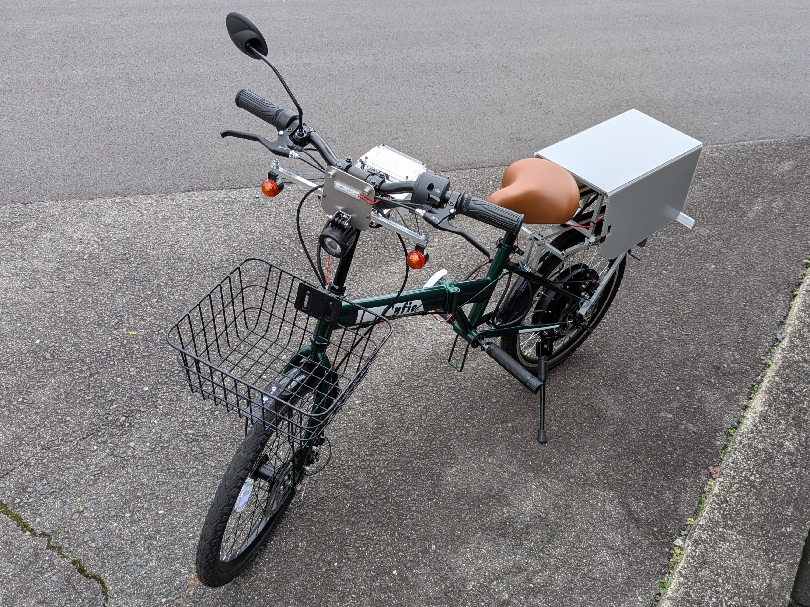
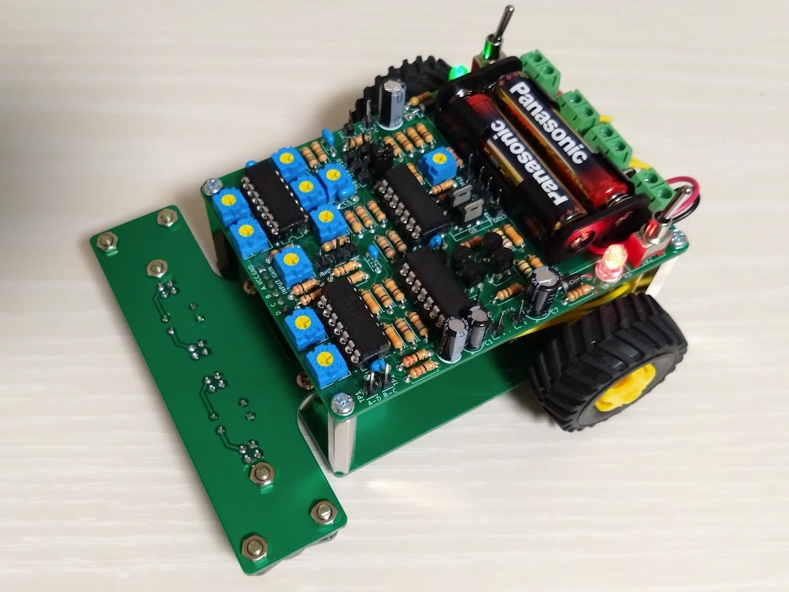

個人製作
日々の学習や好奇心から生まれたアイデアを、分野を問わず実際に形にしています。ここでは、その代表的な製作物を紹介します。
公道走行可能な自作特定小型原動機付自転車

概要
日常の移動手段の確保という身近な課題を解決するため、保安基準に準拠した実用的な電動バイクを構想から設計・製作しました。実際にナンバーを取得し、公道を走行可能です。
使用した主な技術
機械設計 (CAD), ブラシレスモータドライバ, バッテリー監視回路, 電流PI制御, パワーエレクトロニクス
工夫した点・困難だった点
保安基準を満たすことを前提に、安全性を最優先した設計を行いました。既存の自転車フレームを補強しつつ強度を確保する機械設計や、大電流・振動といった過酷な車載条件に耐える回路・基板の設計に注力しました。
NANDゲートICのみで構築した自作4bit CPU

概要
コンピュータの動作原理を根源から理解するため、数百個のNANDゲートIC（74HC00）のみを用いてCPUをフルスクラッチで開発しました。フィボナッチ数の計算などが可能です。
使用した主な技術
論理回路設計 (組み合わせ回路, 順序回路), KiCad, 機械語, アセンブラ
工夫した点・困難だった点
「CPUの仕組みを作りながら楽しむ」ことを目標とし、展示会などでの可搬性も考慮して、機能性を損なわずに基板を可能な限りコンパクトに設計した点が工夫点です。
マイコンレス アナログPIDライントレーサー

概要
オペアンプによる微積分演算の応用として、マイコンを一切使用せず、アナログ回路のみでPID制御によるライントレースを実現しました。
使用した主な技術
オペアンプ, アナログ回路設計, PID制御, センサー回路
工夫した点・困難だった点
先例がほとんどない挑戦だったため、制御理論から回路の仕組みまで全て自身で考案・設計する必要がありましたが、そのプロセス自体が最大の楽しみでもありました。
USB-PD対応 45W出力モバイルバッテリー
概要
USB-PD規格や電源回路への理解を深めるため、高出力（45W）なモバイルバッテリーを自作しました。4セルのリチウムイオン電池を安全に管理します。
使用した主な技術
電源回路, DCDCコンバータ, リチウムイオン電池充放電制御, USB-PD
工夫した点・困難だった点
日常でのハードな使用を想定し、安全性と堅牢性を最優先した回路・筐体設計を心掛けました。特に、多セルバッテリーの安全な充放電管理回路の設計は大きな挑戦でした。
その他の製作物
その他にも、ペンプロッタ、VFD時計、赤外線リモコンフォークリフト模型、VVVFインバータ、テスラコイルなど、好奇心の赴くままに様々なジャンルのものづくりに挑戦しています。